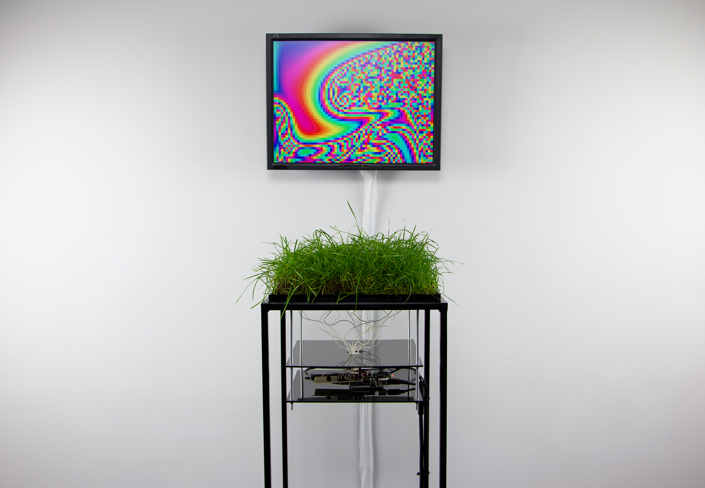

This project is an attempt to build a tangible natural user interface. From a UX design perspective, the term “natural user interface” means a way of interacting with some technology that mimics interaction with the physical world and as a result is invisible. Though in some cases a natural interface can also be an interface made of natural materials.
The project uses a patch of grass that when touched changes the colour gradient of an on-screen animation. The set-up consists of a Touche capacitive sensor connected to a patch of grass, with signals fed through an algorithm in the machine learning software Wekinator that has been trained to detect different types of touches. This grass interface uses electrostatic energy to transmit data and visualise it on the screen.